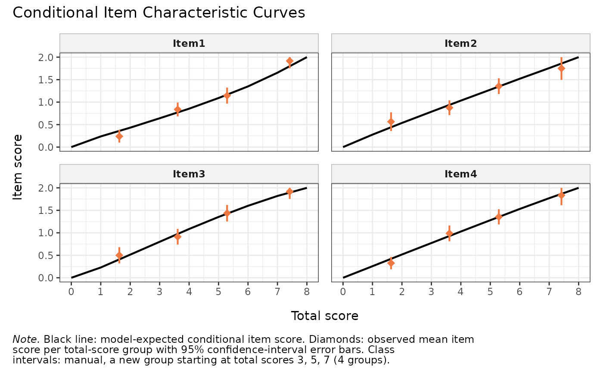

Plots one panel per item with the model-expected item score given the
total score, \(E[X_i \mid R = r]\), and the observed mean item score in
groups of total scores, with confidence intervals. With a dif_var, the
observed means are shown per group, which makes each panel a visual DIF
check, and the partial gamma DIF coefficient is shown per item.
Arguments
- data
A data.frame or matrix of item responses, items scored from 0. One column per item, one row per person.
- dif_var
Optional vector of length
nrow(data)(a factor, or coercible to one) defining groups for DIF. The observed means are then shown per group, and each panel shows the item's partial gamma fromiarm::partgam_DIF(), as inRMdifGamma(), as an effect size without an interval or p-value. DefaultNULL.- grouping
How the observed means are grouped along the total score (see Class intervals in Details):
"quantile"(default),class_intervalsgroups with about equal numbers of respondents,"width",class_intervalsintervals of equal width over the observed total scores,"score", every observed total score its own group, or"manual", groups set byscore_breaks."cut"is an old name for"quantile", still accepted.- class_intervals
Integer, at least 2. Number of groups for
grouping = "quantile"and"width". Default4. Ignored by"score"and"manual".- score_breaks
Integer vector for
grouping = "manual": the total scores at which a new group starts, in increasing order. For example,score_breaks = c(3, 6, 8)on a 0 to 9 scale gives the groups 0-2, 3-5, 6-7 and 8-9. It corresponds tolower.groupsin RASCHplot'sCICCplot(), without the leading zero. DefaultNULL.- ci
Logical. Draw confidence intervals on the observed group means. Default
TRUE.- error_band
Logical. Draw a band around the expected curve showing where the observed mean at each total score should fall under the model (see Details). It complements
ciand does not replace it. DefaultFALSE.- conf_level
Numeric in (0, 1). Confidence level of the error bars and the band. Default
0.95.- min_n
Integer. A cell (group by score interval) needs at least this many respondents to be shown with its interval. Default
8.- items
Optional character or integer vector of the items to plot. The model is always fitted on all items. Default
NULL, all items.- output
"patchwork"(default) for one combined figure, or"list"for a named list of oneggplotper item.- method
Old name for
grouping, still accepted. DefaultNULL.
Value
A patchwork figure, or with output = "list" a named list of
ggplot objects. With dif_var, the partial gamma table is also
attached as attr(., "dif_gamma"), for convenience. It is the result
of RMdifGamma(data, dif_var, output = "dataframe") on the same
respondents. For a test, call RMdifGamma() with the result of
RMdifGammaCutoff() as cutoff, which gives bootstrap p-values
corrected across items.
Details
The approach follows Buchardt, Christensen and Jensen (2023) and their
RASCHplot package, implemented on easyRasch2's CML engine: CML item
thresholds from psychotools, and the exact distribution of each item
score given the total score from elementary symmetric functions.
Data. Only complete cases are used, and with dif_var also only
rows where it is not missing. A message says how many rows were dropped.
An unused response category stops the
function and names the item. A category used only by respondents with
a zero or perfect total score gives a warning, since its threshold
cannot be estimated well.
Conditioning. The expected curve is the conditional expectation of the item score given the total score (Andersen, 1995), which accounts for the item being part of the total. It is not a marginal ICC.
Class intervals. Following Buchardt et al. (2023), the observed
item means can be shown for each total score or for groups of total
scores. All grouping is on the total score, never on an estimated person
location. grouping = "quantile" splits the observed total scores into
class_intervals groups of about equal numbers of respondents, with
common boundaries so that DIF groups share the x-axis. This is the
approach of iarm::ICCplot() (Hmisc::cut2(g = ...)). grouping = "width" splits the observed score range into intervals of equal width,
which reads naturally on the score axis but can leave sparse intervals,
which min_n removes. grouping = "score" shows every observed total
score, the finest resolution, sensible for short scales. grouping = "manual" places the boundaries where score_breaks says. Each group
gives one observed point at its mean total score. If the scores are too
sparse to form class_intervals distinct groups, "quantile" and
"width" fall back to one point per score.
The caption names the grouping that was used, which is not always the one requested. Quantile grouping forms fewer groups than asked for when total scores tie at the boundaries, equal-width and manual grouping can define intervals that no respondent falls into, and both binned methods fall back to score level when the scores are too sparse. The caption reports the number of groups formed, how many contain respondents when that is fewer, and any fall back.
Confidence intervals. The error bars use the normal
approximation \(\bar{x}_l \pm z \sqrt{\mathrm{var}(x_l) / n_l}\)
within each cell, limited to the item's score range. Cells with fewer
than min_n respondents are dropped. With dif_var, this shows sparse
group differences as uncertain.
The model band (error_band). The band is
\(E_{ri} \pm z \sqrt{V_{ri}/n_r}\), where \(E_{ri}\) and
\(V_{ri}\) are the model's conditional mean and variance of the item
score at total score \(r\), and \(n_r\) is the observed number of
respondents with that total score. If the model holds, this is where
the observed mean item score at that total score should fall, given how
many respondents have it. An observed point outside the band shows
local misfit. The band uses the standard error of the mean, not the
much wider SD of single responses, which would flag nothing. Its width
therefore follows the data. It is narrow where many respondents are
(a strict check) and wide where few are (a lenient one), with gaps where
\(n_r = 0\), and it closes on the curve at total score 0 and at the
maximum, where the item score is fixed. The band shows the model's
uncertainty of the observed mean per total score, and the error bars
the sampling uncertainty of the observed group means.
DIF magnitude. The partial gamma (Bjorner et al., 1998) is the
association between the item score and the group given the total score,
a non-parametric effect size, the same statistic as in RMdifGamma().
The plot shows the estimate only. Its asymptotic interval and p-value
come from a normal approximation that rejected too often when there was
no DIF (dichotomous items). To test DIF, use RMdifGamma() with the
result of RMdifGammaCutoff() as cutoff.
References
Andersen, E. B. (1995). Polytomous Rasch models and their estimation. In G. H. Fischer & I. W. Molenaar (Eds.), Rasch Models: Foundations, Recent Developments, and Applications (pp. 271-291). Springer. (Conditional expectation of item scores given the total score, formula 15.22.)
Bjorner, J. B., Kreiner, S., Ware, J. E., Damsgaard, M. T., & Bech, P. (1998). Differential item functioning in the Danish translation of the SF-36. Journal of Clinical Epidemiology, 51(11), 1189-1202.
Buchardt, A.-S., Christensen, K. B., & Jensen, S. N. (2023). Visualizing Rasch item fit using conditional item characteristic curves in R. Psychological Test and Assessment Modeling, 65(2), 206-219.
See also
RMitemInfit() and RMitemRestscore() for item fit tests,
RMdifGamma() and RMdifAnchor() for DIF tests,
RMitemCatFitPlot() for category-level plots given the total score.
Examples
# \donttest{
if (requireNamespace("ggplot2", quietly = TRUE) &&
requireNamespace("patchwork", quietly = TRUE) &&
requireNamespace("iarm", quietly = TRUE)) {
set.seed(42)
sim_data <- as.data.frame(
matrix(sample(0:2, 200 * 4, replace = TRUE), nrow = 200, ncol = 4)
)
colnames(sim_data) <- paste0("Item", 1:4)
# Default: quantile groups (~equal numbers of respondents per group)
RMitemICCPlot(sim_data)
# Equal-width intervals on the total-score scale, with the model band
RMitemICCPlot(sim_data, grouping = "width", error_band = TRUE)
# Every total score as its own group (short scales)
RMitemICCPlot(sim_data, grouping = "score")
# Manual grouping: new groups start at total scores 3, 5, and 7
RMitemICCPlot(sim_data, grouping = "manual", score_breaks = c(3, 5, 7))
}

# }